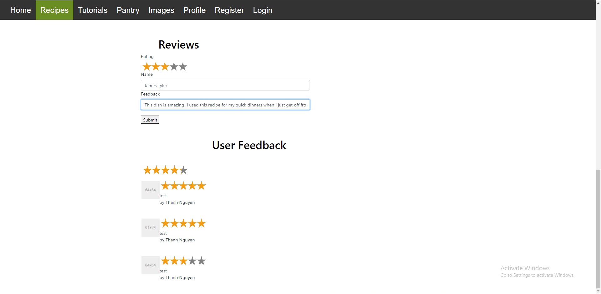
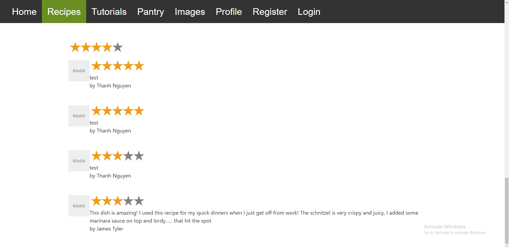
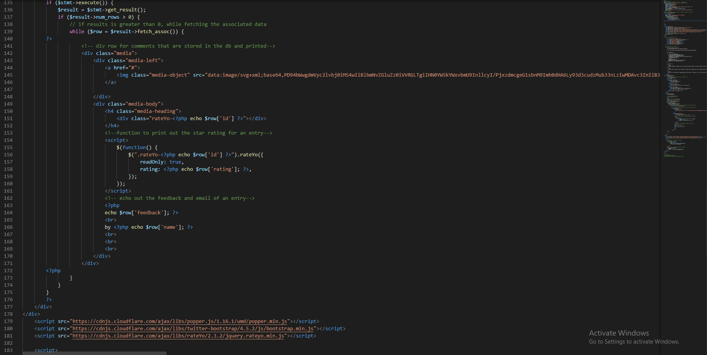

MVF 2: Review
Description
The review system allows members of the website to write reviews and rate other recipes. Users will have the option of leaving a rating and/or review of each dish. The rating feature will be using 5-star rating systems with increments of half stars, these rating are then displayed as an average associated with each dish.Users can submit a review of 280 characters or less. The character limit allows other users to quickly read through each review. Other members can rate these reviews as useful or not to further assist in the reliability of the review.
Each rating of a recipe will be calculated toward a community average rating which will be displayed on that recipe. The ratings of a dish can be used to filter certain scores in or out of a search.
Outcomes
The function of producing a review (allowing the user to write feedback and rate on a recipe, while presenting other reviews from other users and calculate the average rating) was produced successfully within the estimated time. These functions can be demonstrated within our presentation:
 Validation of the review form was meant to be executed if the user:
This was due to inadequate knowledge of php, specifically creating functions in order to deny submission if the required inputs were not met. Another problem was the cleanliness of the code on the function. Although it was commented which made navigating and understanding the code much easier, proper code organisation was not good which made any implementation of other functions difficult. It would cause the code to not function as it should, or create errors.
Windfall
There was no quicker way to complete the functionality of it, it was completed within the due date.